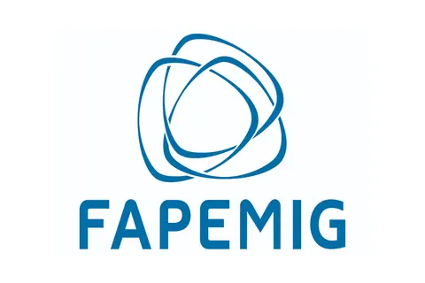

NETEX · Observatório
Observatório
A frente de monitoramento e de pesquisa aplicada do núcleo, onde se concentram os projetos financiados e o diálogo com a sociedade e com gestores públicos.
O Observatório é o nó da UFU na rede do Observatório da Extrema Direita, grupo de pesquisa registrado no CNPq e sediado no Laboratório de História Política e Social da Universidade Federal de Juiz de Fora. A parceria não é protocolar: é nela que se realizam as pesquisas, que se compartilham dados e metodologia e que se articulam as publicações.
A frente tem três produtos previstos, com cadências distintas. Um radar quinzenal, de curadoria comentada do noticiário internacional, organizado por região e com uma seção fixa dedicada às conexões entre elas. Análises assinadas mensais, sobre episódios e tendências. E relatórios técnicos semestrais, com metodologia explícita, sobre um ator, uma rede ou um processo eleitoral.
Todo material produzido segue a política editorial do núcleo: fontes e critérios de seleção declarados, terminologia explicitada, nenhum dado pessoal de indivíduos que não sejam figuras públicas, citação de plataformas extremistas sem hiperlink e revisão por dois pesquisadores antes da publicação. Não se trata de projeto de militância política, e sim de pesquisa acadêmica submetida às exigências de método do campo.
Projeto em execução
Pesquisas financiadas por agências de fomento que o Observatório abriga institucionalmente.
Extremismo violento em ambientes escolares: análise, detecção e combate
Projeto em rede entre a UFJF, a UFU e a UFMG, com participação da Universitat Autònoma de Barcelona por meio do consórcio ARENAS. Prevê um aplicativo de detecção de simbologias extremistas com apoio de inteligência artificial, um banco de dados de acesso aberto, um guia de referência, uma exposição e três eventos de capacitação — um deles sediado na UFU. Cabe ao NETEX a elaboração do guia de referência, primeira etapa do cronograma.

- Processo
- FAPEMIG APQ-02854-26
- Edital
- B01/2026 — Demanda Universal, Categoria B
- Vigência
- Outubro de 2026 a setembro de 2029
- Coordenação
- Prof. Dr. Odilon Caldeira Neto (UFJF)
- Instituições
- UFJF · UFU · UFMG · UAB
O termo de outorga foi firmado com a Fundação de Amparo à Pesquisa do Estado de Minas Gerais, que apoia integralmente a execução do projeto. Toda divulgação de resultados faz referência expressa a esse apoio, conforme previsto no instrumento.
O que o projeto entrega
Sete metas ao longo de três anos, distribuídas entre as instituições participantes.
| # | Entregável | Período |
|---|---|---|
| 1 | Aplicativo de detecção de simbologias extremistas com apoio de inteligência artificial | 2027–2029 |
| 2 | Portal público de referência sobre extremismo violento | 2028 |
| 3 | Guia de referência — sob responsabilidade do NETEX | 1º semestre de 2027 |
| 4 | Exposição itinerante | 2028–2029 |
| 5 | Missão de pesquisa à Universitat Autònoma de Barcelona | 2027 |
| 6 | Três eventos de capacitação, um deles na UFU | 2027–2029 |
| 7 | Missão do Prof. Steven Forti ao Brasil | 2028 |